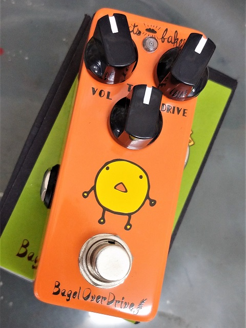
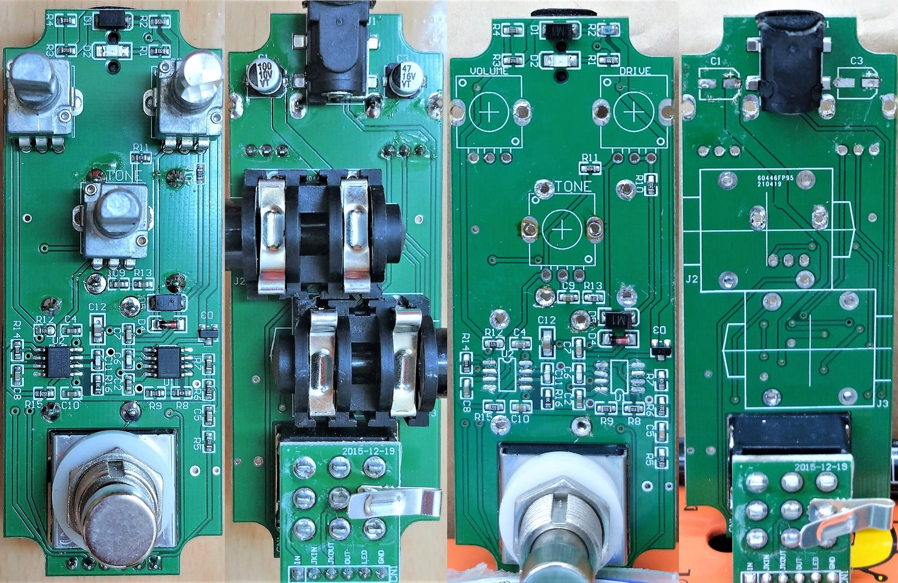
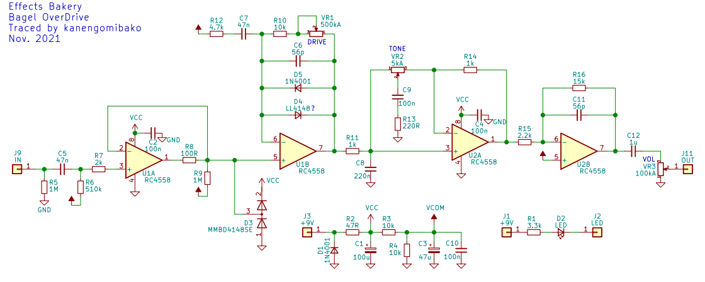

Effects Bakery Bagel OverDrive 修理・解析
2021年12月20日 カテゴリー：修理・改造・解析

エフェクト音が出ないジャンク状態のEffects Bakery Bagel OverDriveを修理し、回路のトレースも行いました。低価格ですが塗装がキレイで作りも問題なく、コストパフォーマンスが良いと思います。
▽基板画像 ※右側2つはトレースのため主な部品を取り外した状態

定格電圧10Vの電解コンデンサ（C1）が使われており、この周辺の故障が予想されました。見た目では異常はありませんでしたが、電源部の47Ω抵抗R2が実測2kΩ程度となっていました。この抵抗とC1を新しいものに交換すると、問題なく音が出て修理完了となりました。
電解コンデンサの定格電圧（耐圧）にどの程度余裕を持たせるか、メーカーの資料は見つかりませんでした。しかしながら定格電圧の80%以下で使うのが普通だと思います（参考ページ→コンデンサの基本、選択のポイント）。
設計にいろいろと特徴があります。LEDは表面実装ですが、拡散カバーのようなものによって視認しやすくなっています。裏フタのグラウンド接続のため、フットスイッチにジャック用端子のようなものが半田付けされているのが面白いです。パッド上のビアが何か所かありますが、穴の中に半田が入りこんでよくなさそうな気がしてしまいます。ベタグラウンドへのパッド接続はサーマルリリーフ状になっていないため、ジャック類の取り外しが大変でした。
▽回路図

チューブスクリーマー（TS）を元にして、オリジナル要素を追加してあるようです。ICの電源ピンやバイアス電圧部分に100nFのバイパスコンデンサがわざわざ入れてあるのが意外でした。
- 入力部
バッファ後のD3の意図はよくわかりません。通常は入力保護として、最初に入れることが多いと思います。
- 歪み部
TSとほぼ同じです。クリッピングダイオードの片方は型番がはっきりしませんが、順方向降下電圧が実測0.63V程度だったので、小信号用汎用ダイオードと思われます。
- トーン回路
TSとの比較シミュレーションを行いました。

C9がTSより小さいため変化部分が高音域寄りになります。また、トーンポットの抵抗値が小さくAカーブなので、調整幅が狭く偏りがあります。
- 出力部
約6.8倍の反転増幅で、充分な音量が得られるようになっています。入力信号がクリッピング後の0.6V程度から4Vまで増幅されるので、オペアンプの歪みが入ってきそうです。